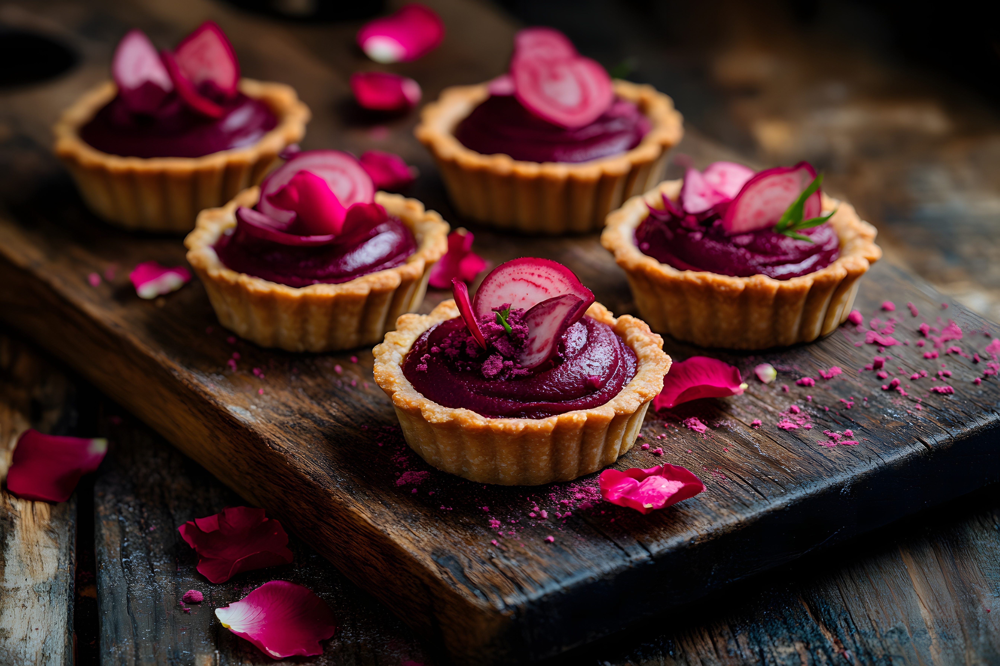

Menu
Pastries
-
Rosebud Almond Tart
A delicate, gluten-free almond tart with a smooth, rose-infused filling. Lightly dusted with powdered sugar for a floral, nutty delight.
$4.50
-
Bloomberry Scone
A tender, plant-based scone infused with seasonal berries and a hint of citrus zest. Lightly sweetened and perfect with a cup of tea or coffee.
$3.75
-
Maple Blossom Roll
A soft, cinnamon-spiced roll swirled with rich maple syrup and topped with a delicate almond glaze. A cozy, comforting treat.
$4.25
-
Golden Petal Croissant
A classic, flaky croissant with a buttery, plant-based twist. Baked fresh every morning for that perfect crisp outside and soft, airy inside.
$3.50
-
Sunflower Oat Cookie
A chewy, wholesome cookie packed with oats, sunflower seeds, and a touch of cinnamon. Naturally sweetened and perfect for an energy boost.
$2.75
-
Lavender Bloom Muffin
A soft, fragrant muffin infused with lavender and lemon zest, topped with a light drizzle of plant-based vanilla glaze. A soothing, aromatic treat.
$3.95
Botanical Beverages

-
Matcha Meadow Latte
A smooth and earthy blend of ceremonial-grade matcha and creamy oat milk, lightly sweetened with agave. Topped with a sprinkle of matcha dust for a vibrant finish.
$4.75 (hot/iced)
-
Hibiscus Bloom Tea
A refreshing floral infusion of hibiscus, rosehips, and citrus zest. Naturally caffeine-free and packed with antioxidants for a rejuvenating sip.
$3.50 (hot/iced)
-
Golden Sun Chai
A cozy, spiced turmeric chai latte made with oat milk and a touch of maple syrup. Warm, comforting, and full of anti-inflammatory goodness.
$4.95 (hot/iced)
-
Vanilla Orchid Cold Brew
Smooth, slow-brewed coffee infused with Madagascar vanilla and topped with a splash of creamy almond milk. A refreshing pick-me-up with a floral twist.
$4.25 (iced)
-
Lavender Breeze Lemonade
A delicate balance of tart lemonade and floral lavender syrup, served over ice with a sprig of fresh mint. Light, refreshing, and naturally uplifting.
$3.95 (iced)
-
Coconut Blossom Hot Cocoa
A rich and velvety hot chocolate made with creamy coconut milk and organic cocoa, lightly sweetened with coconut sugar and topped with a dusting of cacao nibs.
$4.50 (hot)
Nourishing Bites

-
Sunrise Bloom Bowl
A wholesome breakfast bowl with creamy coconut yogurt, house-made granola, seasonal fruits, and a drizzle of agave. A fresh and energizing start to your day.
$7.95
-
Garden Harvest Sandwich
A toasted multigrain sandwich loaded with roasted veggies, creamy hummus, and crisp greens. Served with a side of house-made herb dressing.
$8.50
-
Avocado Blossom Toast
Thick sourdough toast topped with smashed avocado, cherry tomatoes, and a sprinkle of hemp seeds. Finished with a touch of lemon zest and chili flakes for a subtle kick.
$6.95
-
Floursih Quinoa Salad
A protein-packed salad with quinoa, roasted chickpeas, cucumbers, and a citrus tahini dressing. Topped with fresh herbs for a vibrant, satisfying meal.
$8.75
-
Wildflower Wrap
A soft spinach tortilla filled with spiced lentils, crunchy slaw, and a creamy cashew dressing. Wrapped up fresh and perfect for on-the-go eating.
$8.25
-
Maple Pecan Oat Bowl
Warm, slow-cooked oats topped with maple-glazed pecans, cinnamon, and a swirl of almond butter. A cozy, plant-based twist on a classic comfort dish.
$7.50
Desserts

-
Blossom Berry Cheesecake
A rich and creamy plant-based cheesecake made with cashew cream and a hint of vanilla, topped with a swirl of seasonal berry compote on a gluten-free almond crust.
$5.50
-
Sakura Panna Cotta
A silky, plant-based panna cotta infused with delicate sakura essence. Topped with a light drizzle of maple syrup and edible cherry blossom petals for a beautifully balanced floral and creamy treat.
$5.75
-
Golden Petal Brownie
A decadent, fudgy chocolate brownie made with almond flour and sweetened with maple syrup. Topped with a sprinkle of sea salt for the perfect balance of flavors.
$4.25
-
Chai-Spiced Carrot Cake
A moist and spiced plant-based carrot cake with hints of cinnamon and nutmeg, topped with a dairy-free cashew cream frosting and a dusting of cinnamon.
$5.25
-
Lavender Lemon Bar
A zesty lemon bar infused with a touch of lavender, layered over a buttery almond crust. Lightly dusted with powdered sugar for the perfect citrusy bite.
$4.50
-
Rose & Pistachio Shortbread
Buttery, melt-in-your-mouth plant-based shortbread infused with rosewater and topped with crushed pistachios for a delicate floral crunch.
$3.95